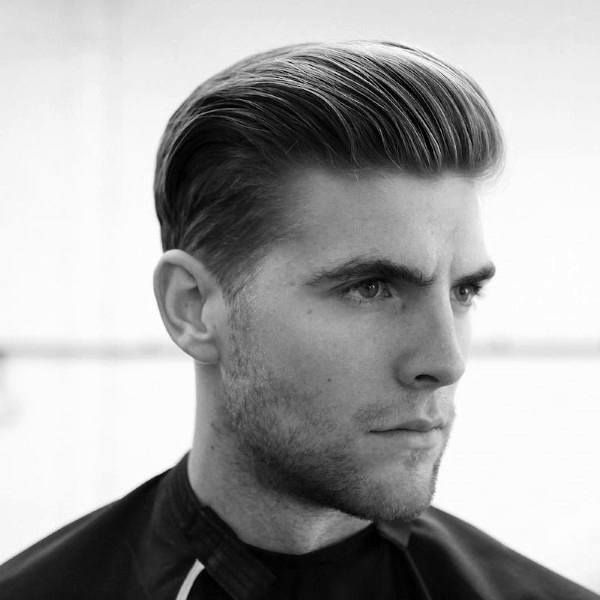
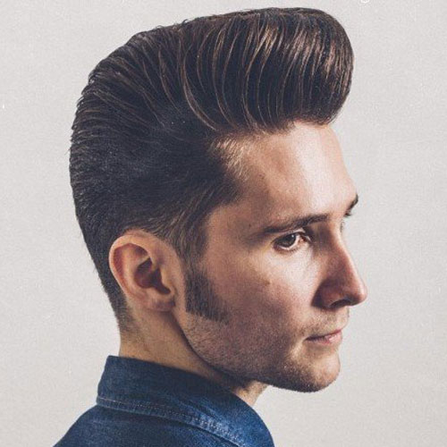
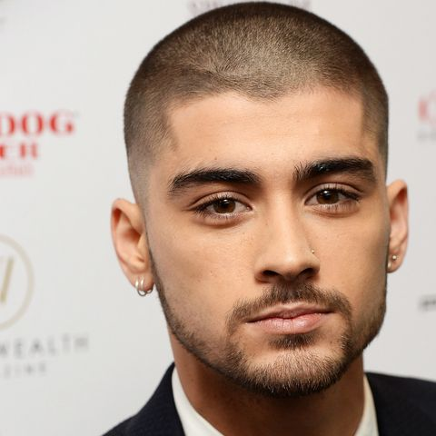
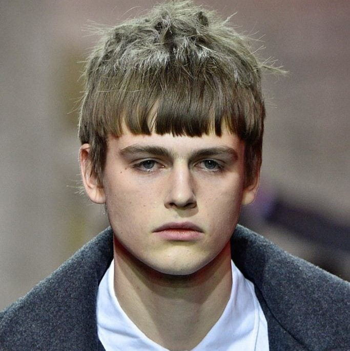
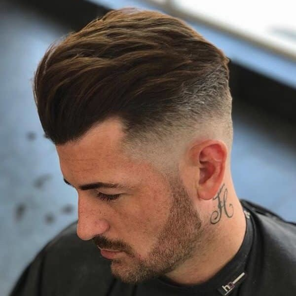
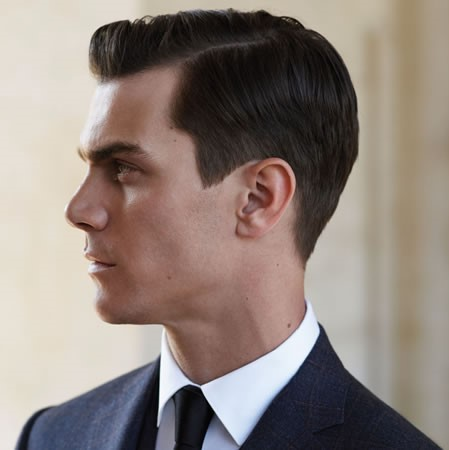
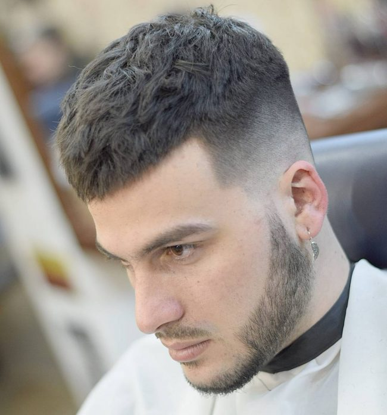
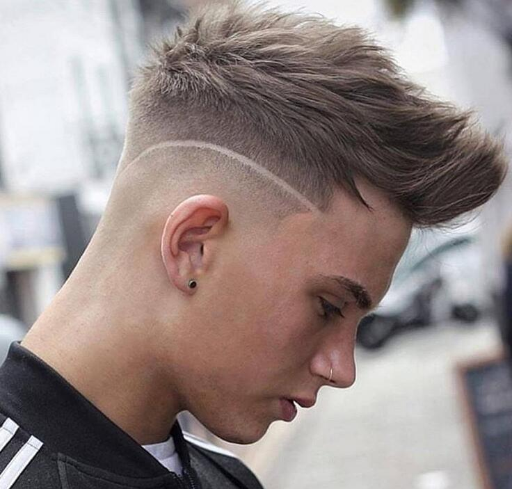
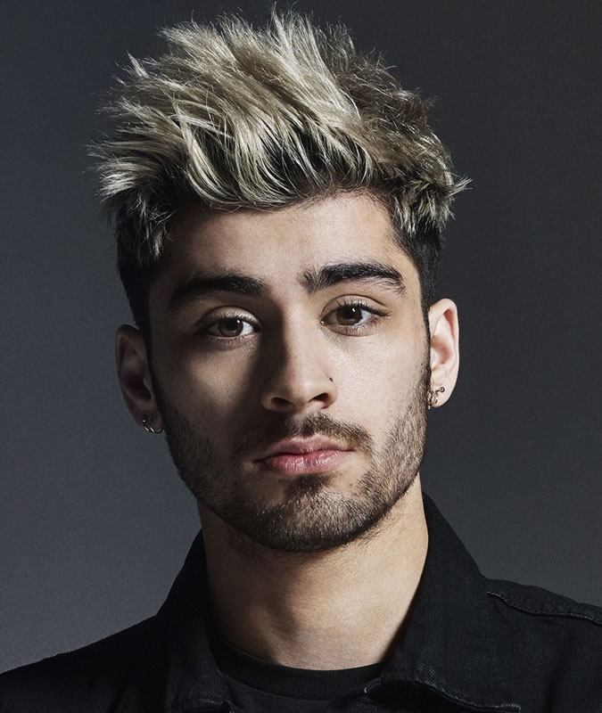
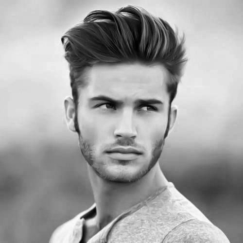

Untuk Laki-laki... Jangan Khawatir Disini juga Tersedia Gaya Rambut Yang Kamu Banget
Hanya Untukmu ^_^
Lebih akrab dengan sebutan "rambut klimis", sangat cocok untuk kamu yang ingin tampil rapi ala pria kantoran. Nah jika kamu ingin menghadiri acara formal seperti pesta pernikahan kamu bisa memilih gaya rambut satu ini, karena jika dipadukan dengan jas atau pakaian rapi akan sangat menunjang penampilan kamu.

Dengan potongan rambut tipis bagian samping dan terlihat tebal pada bagian atasnya atau lebih tepatnya berbentuk jambul.

Mungkin lebih tepatnya gaya rambut cepak. Cocok buat kamu yang simpel dan gak suka perawatan ini dan itu.

Model rambut pendek yang dipadukan dengan model rambut poni. Potongan rambut seperti ini lebih dikenal dengan korean style. Untuk gaya rambut ini, lebih banyak digemari oleh kaum remaja.

Jika Pompadour semakin ke atas terlihat lebih tebal, namun untuk Undercut tidak demikian. Nah gaya rambut satu ini, nggak ada matinya. Hampir setiap tahun penataan rambut seperti ini masih banyak peminatnya.

Side Part merupakan model rambut dengan cukuran tipis dibagian sampingnya, sedangkan rambut bagian atasya dibiarkan memanjang, dan kemudian ditata dengan belahan yang menyamping.

Jika kamu ingin terlihat cowok banget nih, kamu bisa coba deh gaya rambut satu ini. Dengan model tipis di bagian samping kiri dan kanannya, dan hanya meninggalkan sedikit rambut pada bagian atasnya.

Model rambut satu ini mungkin tidak terlalu diburu oleh pria-pria yang menyukai gaya formal dan rapi. Namun untuk kalangan remaja gaya rambut seperti ini masih menjadi tren, karena bisa membuat mereka terlihat funky abis.

Ini merupakan model rambut mohawk nanggung. Gak ada salahnya untuk mencobanya. Biasanya yang menyukai gaya rambut seperti ini adalah anak-anak sekolahan.

Lagi-lagi hampir mirip dengan Pompadour. Untuk model rambut ini, jambulnya tidak terlalu kebelakang. Kamu harus pandai-pandi menata rambutmu jika memilih gaya potongan seperti ini, agar tetap terlihat rapi dan ganteng maksimal.

15 Gaya rambut pria yang akan jadi tren pada 2019
{kind=link}
{kind=link}
{kind=link}
{kind=link}
{kind=link}
{kind=link}
{kind=link}
{kind=link}
{kind=link}
{kind=link}